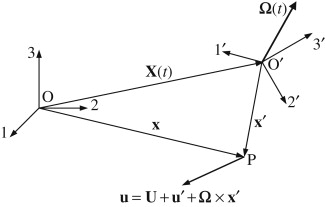

Geometry showing the relationship between a stationary coordinate system \( O123 \) and a noninertial coordinate system \( O'1'2'3' \) that is moving, accelerating, and rotating with respect to \( O123 \)
In particular, the vector connecting \( O \) and \( O' \) is \( \mathbf{X}(t) \) and the rotational velocity of \( O'1'2'3' \) is \( \mathbf{\Omega}(t) \). The vector velocity \( \mathbf{u} \) at point \( P \) in \( O123 \) is shown. The vector velocity \( \mathbf{u'} \) at point \( P \) in \( O'1'2'3' \) differs from \( \mathbf{u} \) because of the motion of \( O'1'2'3' \)